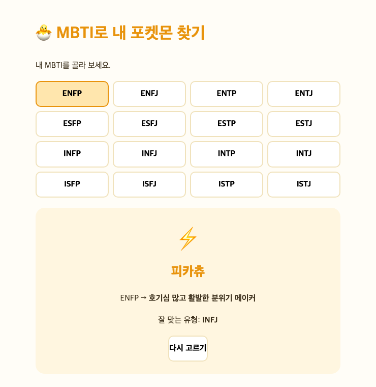

깃허브·스트림릿 시작하기
오늘의 약속 — 코드 X · 읽고 · AI에게 시키고 · 내 주소(URL) 갖고 집에
0. 코드 읽는 눈 — 다섯 개면 읽힌다
- 코드 = 외국어로 쓴 글 · 단어 몰라도 생김새만 알면 읽힘
- 딱 다섯 개만 · 외우지 말고 나올 때 "아, 그거"
| 생김새 | 읽는 법 | 예시 |
|---|---|---|
| 영어 단어 | 무언가를 담은 이름표(변수) | song, df |
| 따옴표 글자 | 값 (알맹이) | "뉴진스" |
= | ‘같다’ 아님. 담아라(←) | age = 5 |
. (점) | ‘~의’ | df.head = df의 head |
( ) 괄호 | ‘실행해라’ (함수) | print("안녕") |
df.head()→ "df 표의 앞부분 보여 줘"import= 도구상자 불러오기 ·as= 별명 붙이기
🩹 에러(빨간 글씨)가 나면?
- 에러 = 어디가 잘못됐는지 알려주는 쪽지
- 통째로 복사 → AI에 붙여넣고 "이 에러 고쳐줘"
- 코드 짠 게 AI → 고치는 것도 AI 몫
🎨 바이브 코딩 — 시작 전에
- 바이브 코딩 = 사람이 자연어로 시키고 AI가 코드를 씀 · 사람은 판단·검증·반복
- 이름 붙인 사람 = 안드레이 카파시(前 테슬라 AI·OpenAI) · 2025년 2월 트윗
🔗 더 보기
- 카파시 원문 트윗 → x.com/karpathy
- 개념 정리(위키백과) → Vibe coding
프롬프트 기본 포맷 (대표 예시 하나)
- 좋은 주문 = 맥락 + 제약을 담아 명확한 과제 전달
프롬프트 포맷
[역할] 너는 ~을 잘하는 도우미야. [맥락] 지금 상황·데이터는 ~야. [작업] ~를 만들어줘. [제약] 조건: 파일 하나 / 한국어 / 외부 설치 없이 … [출력] 완성된 전체 코드를 한 번에 줘.
- 이 포맷대로 쓴 예시 ↓
예시 프롬프트
[역할] 너는 초보자용 웹페이지를 잘 만드는 도우미야. [맥락] 나는 코딩을 처음 배우고, 결과를 GitHub Pages에 올릴 거야. [작업] 'D-day 계산기' 웹페이지를 만들어줘. [제약] 파일 하나(index.html)로 끝나고, 외부 설치 없이 브라우저에서 바로 열려야 해. 날짜를 고르면 오늘까지 며칠 남았는지 크게 보여줘. 한국어, 따뜻한 노란 톤. [출력] 완성된 index.html 전체 코드를 한 번에 줘.
⚠️ 포맷보다 중요한 것
- 이 포맷은 틀(체크리스트)일 뿐 · 순서·라벨을 꼭 지킬 필요 없음
- 핵심 = 맥락(무엇을·누구를 위해) + 제약(조건)을 빠짐없이 담아 명확한 과제로 전달
- 모호하면 → 엉뚱한 결과 · 구체적이면 → 원하는 결과
1. 내 첫 웹페이지 = MBTI 테스트를 인터넷에
- MBTI 테스트 페이지 → AI 제작 → GitHub Pages로 배포
- 목표 = 코드 내용 X · ‘만들기 → 올리기 → 켜기’ 흐름 익히기
- 새 저장소 만들기
GitHub 오른쪽 위 + → New repository · 이름my-mbti· Public · Add a README 체크 · Create - AI에게 MBTI 페이지 주문
아래 주문서 그대로 붙여넣기 →index.html코드 받기
① 샘플 프롬프트
'MBTI 테스트' 웹페이지를 HTML 파일 하나로 만들어줘. 조건: - 파일 하나(index.html)로 끝나고, 외부 설치·인터넷 연결 없이 브라우저에서 바로 열려야 해 (CSS와 자바스크립트를 파일 안에 포함). - 질문 6~8개에 답하면 16가지 MBTI 유형 중 하나를 알려줘. - 결과 화면에 유형 코드(예: ENFP), 한 줄 별명, 재미있는 설명 2~3줄, 잘 맞는 유형 1개를 보여줘. - 따뜻한 크림·노란색 톤, 큰 글씨, 한국어, 초보자도 보기 쉽게. - '다시 하기' 버튼 포함. 완성된 index.html 전체 코드를 한 번에 줘.
- AI가 완성된 코드 한 덩어리 반환 · 내 것과 달라도 OK · 이런 모습이면 성공
② AI가 준 코드 (예시)
<!DOCTYPE html>
<html lang="ko">
<head><meta charset="utf-8"><title>나의 MBTI는?</title>
<style>
body{font-family:sans-serif;background:#fffdf7;color:#3a2e1a;
max-width:600px;margin:40px auto;padding:0 20px;line-height:1.7}
h1{color:#e8930c}
.q{background:#fff6e0;border:1px solid #f0e2bc;border-radius:14px;padding:16px;margin:14px 0}
button{font:inherit;cursor:pointer;border:2px solid #f0e2bc;background:#fff;
border-radius:10px;padding:10px 14px;margin:6px 6px 0 0}
.go{background:#e8930c;color:#fff;border-color:#e8930c;font-weight:800;margin-top:16px}
#result{display:none;background:#fff6e0;border-radius:18px;padding:24px;margin-top:20px;text-align:center}
#result .code{font-size:2.4rem;font-weight:900;color:#e8930c}
</style></head>
<body>
<h1>🐣 나의 MBTI는?</h1>
<p>네 가지 질문에 답해 보세요.</p>
<div id="quiz"></div>
<button class="go" onclick="showResult()">결과 보기</button>
<div id="result"></div>
<script>
const Q=[
{q:"주말엔?",a:["사람들과 왁자지껄 (E)","집에서 혼자 조용히 (I)"]},
{q:"새 정보를 볼 때?",a:["사실·현실 위주 (S)","의미·가능성 위주 (N)"]},
{q:"결정할 때?",a:["논리·원칙 (T)","마음·관계 (F)"]},
{q:"계획은?",a:["미리 촘촘하게 (J)","그때그때 유연하게 (P)"]}];
const L=[["E","I"],["S","N"],["T","F"],["J","P"]];
const pick=[null,null,null,null];
document.getElementById("quiz").innerHTML=Q.map((it,i)=>
`<div class="q"><b>${i+1}. ${it.q}</b><br>`+
it.a.map((t,j)=>`<button id="b${i}_${j}" onclick="choose(${i},${j})">${t}</button>`).join("")+
`</div>`).join("");
function choose(i,j){ pick[i]=j;
document.getElementById("b"+i+"_0").style.background="#fff";
document.getElementById("b"+i+"_1").style.background="#fff";
document.getElementById("b"+i+"_"+j).style.background="#ffe6ad"; }
function showResult(){
if(pick.includes(null)){ alert("네 질문에 모두 답해 주세요!"); return; }
const type=pick.map((p,i)=>L[i][p]).join("");
const r=document.getElementById("result"); r.style.display="block";
r.innerHTML=`<div class="code">${type}</div>`+
`<p>당신은 <b>${type}</b> 유형이에요!</p>`+
`<button class="go" onclick="location.reload()">다시 하기</button>`; }
</script>
</body></html>- 브라우저에서 열어 확인 · 마음에 안 들면 대화로 개선
③ 프롬프트 개선 (예시)
좋아! 이제 이걸 더 멋지게 고쳐줘. - 16개 유형마다 별명과 2~3줄 설명, 잘 맞는 유형 1개를 넣어줘. - 결과 화면에 유형 이모지 하나를 크게, 배경색을 유형별로 다르게. - 질문을 8개로 늘리고, '결과 복사하기' 버튼을 추가해줘.
💡 바이브 코딩의 핵심 리듬
- ① 주문 → ② 결과 확인 → ③ 개선 주문 · 모든 만들기가 이 세 박자
- 마음에 들 때까지 ③ 반복 · 코드 못 짜도 "어디를 어떻게" 말은 가능
- index.html 파일 추가
Add file → Create new file · 파일명 정확히index.html· 코드 붙여넣기
- 저장(커밋)
맨 아래 초록 Commit changes · 커밋 = ‘이 상태로 저장’ - Pages 켜기
Settings → Pages · Branch =main· Save - 내 주소 확인
1~2분 뒤 새로고침 →https://사용자이름.github.io/my-mbti/🎉

✔️ 방금 무슨 일이?
- 인터넷에 내 사이트 배포 완료 · 누구에게나 주소 전송 가능
- 이미 나는 ‘개발자’
2. AI로 ‘실시간 날씨 대시보드’ 만들기 (키 없는 API)
- 키가 필요 없는 API에서 지금 이 순간 날씨를 바로 불러오는 대시보드
- 파일 속 숫자가 아니라 실시간 데이터 — "살아있는 데이터" 첫 맛보기
- 코드는 AI가 · 우리는 주문·배포만
📡 데이터 출처 = Open-Meteo (API 키 불필요)
- 무료 날씨 API open-meteo.com · 키 없이 브라우저에서 바로 호출(CORS 허용)
- 서울 좌표 = 위도
37.57· 경도126.98 - 키가 필요한 API(유튜브 등)는 3일차에 배웁니다
- AI에게 아래 주문서 그대로 붙여넣기
① 샘플 프롬프트
'실시간 날씨 대시보드'를 HTML 파일 하나(weather.html)로 만들어줘. 조건: - 파일 하나로 끝나고, 외부 설치 없이 브라우저에서 바로 열려야 해(GitHub Pages에 올릴 거야). - 데이터는 'API 키가 필요 없는' Open-Meteo API를 브라우저에서 fetch로 바로 불러와: https://api.open-meteo.com/v1/forecast?latitude=37.57&longitude=126.98¤t=temperature_2m,relative_humidity_2m,wind_speed_10m&hourly=temperature_2m&daily=temperature_2m_max,temperature_2m_min&timezone=Asia/Seoul - 상단 요약 카드: 현재 기온, 습도, 풍속. - 오늘 시간대별 기온 꺾은선 그래프 1개(그래프 라이브러리는 CDN으로). - 7일간 최고/최저 기온도 보여줘. - 따뜻한 크림·노란색 톤, 한국어 라벨, 초보자도 읽기 쉽게. - 완성된 weather.html 전체 코드를 한 번에 줘.
- 받은 코드를 GitHub에 새 파일로
같은 저장소에weather.html만들고 붙여넣기 · 커밋 - 주소로 확인
https://사용자이름.github.io/my-mbti/weather.html· 새로고침하면 값이 바뀜(실시간!)
- 여기서도 세 박자 · 결과 보고 ③ 개선 이어서 주문
③ 프롬프트 개선 (예시)
좋아! 이어서 고쳐줘. - 맨 위에 도시 선택 드롭다운(서울·부산·제주)을 넣고, 고르면 그 도시 날씨로 바꿔줘. - 맑음·비 같은 날씨 상태를 큰 이모지로 보여줘. - 3일 예보 카드도 추가해줘.
💡 기억하세요
- ① 주문 → ② 결과 → ③ 개선 · 반복 = 바이브 코딩
3. 왜 스트림릿을 배울까? — 첫 웹앱 켜기
- 브라우저 HTML로도 API·드롭다운은 됨 (방금 봤듯)
- 단, 파이썬 데이터 분석 · 비밀 열쇠(API 키) 숨기기가 필요하면 부족
- → 스트림릿 = 파이썬 코드를 버튼·입력창 있는 웹앱으로
- 오늘 목표: 종목 입력 → 1년 주가 그래프 뜨는 앱 배포
- 새 저장소 만들기
my-stock-appPublic 저장소(README 포함) - requirements.txt 추가
앱이 쓸 도구 목록 · 파일명 정확히requirements.txt· 아래 붙여넣기
requirements.txt
streamlit yfinance plotly
- AI에게 앱 코드 주문
아래 주문서 →main.py코드 받기
① 샘플 프롬프트
스트림릿(streamlit) 앱 하나(main.py)를 만들어줘. - 사용자가 주식 종목 코드를 입력하면(예: 005930.KS 삼성전자, AAPL 애플), yfinance로 최근 1년 주가를 불러와 plotly 꺾은선 그래프로 보여줘. - 맨 위에 제목과 간단한 설명, 입력창(st.text_input), 그리고 현재가·1년 등락률 카드(st.metric). - 한국어 라벨, 따뜻한 톤. 초보자용으로 주석을 한국어로 달아줘. - main.py 전체 코드를 한 번에 줘.
- 배포 후 켜 보고 · 마음에 들면 ③ 개선으로 확장
③ 프롬프트 개선 (예시)
좋아! 이어서 고쳐줘. - 종목을 2개까지 나란히 비교할 수 있게(입력창 2개). - 기간을 1개월·6개월·1년·5년 버튼으로 고를 수 있게. - 그래프 아래에 최고가·최저가·평균가 카드를 추가해줘.
- main.py 파일로 저장
저장소에main.py만들고 붙여넣기 · 커밋 - 스트림릿에서 배포
share.streamlit.io→ Create app → 저장소·main.py선택 → Deploy - 1~2분 기다리기
앱 켜지면 종목 코드 바꿔 입력 · 사용자가 바꾸는 웹앱 = HTML과의 차이
⏳ 시간이 부족하면
- 주식앱 = 오늘 완성 목표 아님 · ‘스트림릿의 맛’만 보면 OK
- 막히면 표시 → 2일차 시작에 이어서
🎒 오늘의 체크 & 링크
- 내 GitHub Pages 주소가 생겼다 (MBTI 테스트)
- HTML 날씨 대시보드를 배포했다
- 스트림릿으로 앱을 켜 봤다 (미완성도 OK)
- 에러가 나면 통째로 복붙하면 된다는 걸 안다
🌱 내일을 위한 씨앗
- 오늘 만든 3개 주소 메모 → 마지막 날 나만의 프로젝트 재료